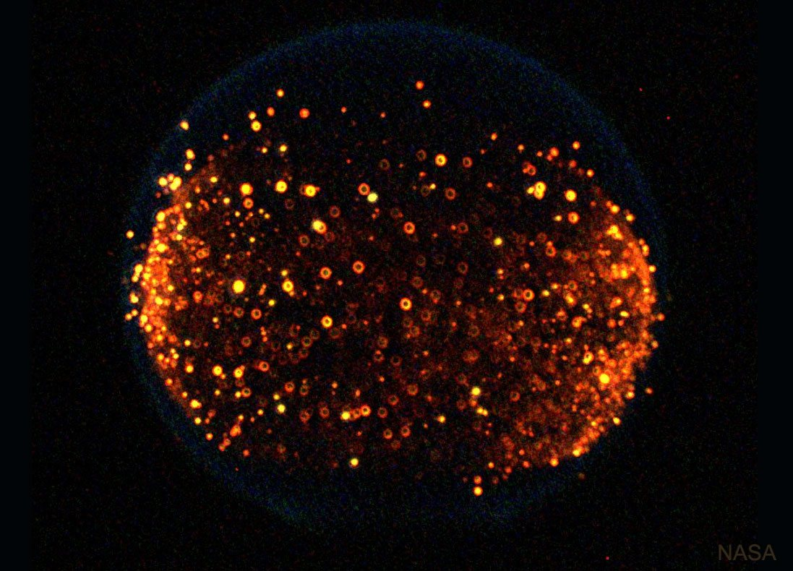
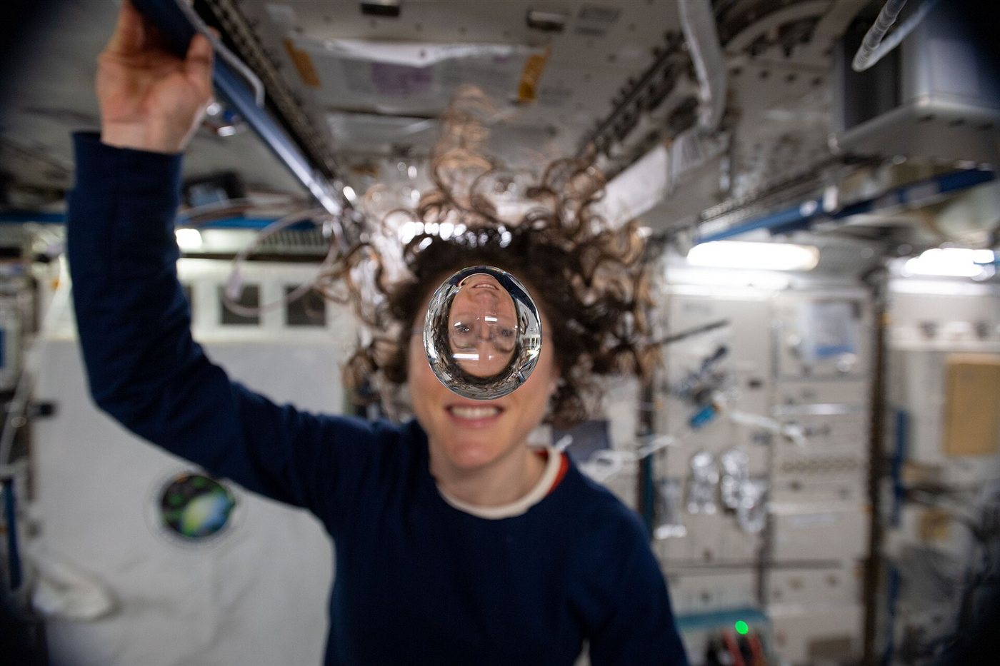

Llamas esféricas, gotas flotantes y capilaridad en la Estación Espacial
En la Tierra, una vela tiene forma de lágrima, el agua se queda en el fondo del vaso y el aire caliente sube. Todo eso depende de algo que damos por sentado: la gravedad. En la Estación Espacial Internacional, la llama de una gotita de combustible es una esfera, y el agua no sabe qué es «abajo». Es un laboratorio donde la mecánica de fluidos se comporta como no estamos acostumbrados.
La forma de una llama en la Tierra es una consecuencia de la gravedad. El aire caliente, más liviano, sube por flotación, y arrastra la llama hacia arriba. Si no hay gravedad, no hay flotación ni convección, y esa corriente desaparece (un razonamiento propio).
Eso produce llamas muy distintas. La NASA explica que, en casi nula gravedad, son circulares, no con forma de lágrima [1]. En el experimento FLEX-2, a bordo de la Estación Espacial, se encienden gotitas de combustible en una cámara de prueba [1]. Sin convección, el oxígeno llega a la llama solo por difusión molecular. Dan Dietrich, científico del proyecto, señala que la difusión lleva oxígeno a la llama y aleja los productos de combustión a un ritmo 100 veces más lento que el flujo por flotación en la Tierra [2].

Esas llamas pueden arder a menor temperatura y con menos oxígeno que en la Tierra [2]. Desde marzo de 2009, FLEX hizo más de 200 ensayos [2]. Esto tiene consecuencias prácticas: desde la seguridad contra incendios en naves hasta el rendimiento de los motores de combustión [1].
La vela sin chimenea: en la Tierra, una vela funciona como una pequeña chimenea: el aire caliente sube y trae aire fresco. En órbita, esa chimenea desaparece. La llama tiene que esperar a que el oxígeno llegue caminando.
¿Por qué una gota en órbita es esférica? En la Tierra, una gota grande se aplasta porque su peso compite con la tensión superficial. La competencia se mide con el número de Bond:
Para agua en la Tierra, Bo = 1 corresponde a un tamaño de unos 2,7 milímetros (un cálculo propio con σ = 0,072 N/m): por eso, las gotas más grandes se aplastan. Si g se reduce mil veces, esa escala crece unas 30 veces, hasta 8 centímetros. Si g se reduce un millón de veces, 2,7 metros (cálculos propios). Sin un peso que compita, la tensión superficial lleva el agua a la forma de menor área: una esfera.

Esto no es una curiosidad. En un auto, un caño sale del fondo del tanque, y la gravedad pone el combustible en ese fondo [3]. En el espacio, los propelentes flotan dentro de los tanques y las gotas rebotan por los sistemas de reciclado [3]. Los Experimentos de Flujo Capilar de la NASA, un conjunto de tres, investigan cómo fluyen los líquidos en microgravedad, para diseñar mejores tanques de combustible, sistemas de enfriamiento y de reciclado de agua [3].
La solución es usar lo que queda: la capilaridad. Si la gravedad no mueve el líquido, la pueden mover las esquinas y las paredes de un recipiente, que tiran de él por tensión superficial (un razonamiento propio).
Microgravedad no es gravedad cero: a la altura de la Estación Espacial, la gravedad sigue siendo casi tan fuerte como en la superficie. Los objetos flotan porque todo cae en órbita con la misma aceleración. Lo que desaparece no es la gravedad, sino su efecto sobre el fluido respecto del recipiente (un comentario propio).
Sin peso relativo no hay flotación, y sin flotación no hay convección. Una llama se vuelve una esfera que respira por difusión, y un líquido deja de estar abajo y pasa a obedecer a la tensión superficial. Lo que en la Tierra es un detalle, en órbita es la física dominante, y hay que diseñar con ella.
Pregunta para la comunidad: ¿Cómo tomarías café en la Estación Espacial si no podés inclinar la taza? ¿Y qué pasa con las burbujas en una botella de gaseosa, si no hay flotación que las lleve hacia arriba?